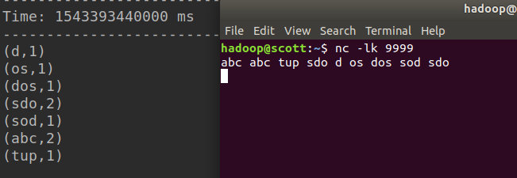

环境设置
首先确保已经按安装Spark，使用maven构建工程。
在pox.xml中添加：
<?xml version="1.0" encoding="UTF-8"?>
<project xmlns="http://maven.apache.org/POM/4.0.0"
xmlns:xsi="http://www.w3.org/2001/XMLSchema-instance"
xsi:schemaLocation="http://maven.apache.org/POM/4.0.0 http://maven.apache.org/xsd/maven-4.0.0.xsd">
<modelVersion>4.0.0</modelVersion>
<groupId>SparkStreaming</groupId>
<artifactId>NetworkWordCount</artifactId>
<version>1.0-SNAPSHOT</version>
<properties>
<maven.compiler.source>1.8</maven.compiler.source>
<maven.compiler.target>1.8</maven.compiler.target>
</properties>
<packaging>jar</packaging>
<repositories>
<repository>
<id>alimaven</id>
<url>http://maven.aliyun.com/nexus/content/groups/public/</url>
</repository>
</repositories>
<dependencies>
<!-- https://mvnrepository.com/artifact/org.apache.spark/spark-core -->
<dependency>
<groupId>org.apache.spark</groupId>
<artifactId>spark-core_2.11</artifactId>
<version>2.3.2</version>
</dependency>
<dependency>
<groupId>org.apache.spark</groupId>
<artifactId>spark-streaming_2.11</artifactId>
<version>2.4.0</version>
</dependency>
</dependencies>
</project>
会自动添加依赖
WordCount
编写程序
这里我们监听一个本地的端口（ TCP source），例如9999，将该端口的数据作为WordCount输入，然后使用与spark一样的操作进行处理即可。
需要注意，这里的local[2]表示两个worker线程：
import org.apache.spark.SparkConf;
import org.apache.spark.streaming.Durations;
import org.apache.spark.streaming.api.java.JavaDStream;
import org.apache.spark.streaming.api.java.JavaPairDStream;
import org.apache.spark.streaming.api.java.JavaReceiverInputDStream;
import org.apache.spark.streaming.api.java.JavaStreamingContext;
import scala.Tuple2;
import java.util.Arrays;
public class NetworkWordCount {
public static void main(String[] args) throws Exception{
// Create a local StreamingContext with two working thread and batch interval of 1 second
SparkConf conf = new SparkConf().setMaster("local[2]").setAppName("NetworkWordCount");
JavaStreamingContext jssc = new JavaStreamingContext(conf, Durations.seconds(20));
// Create a DStream that will connect to hostname:port, like localhost:9999
JavaReceiverInputDStream<String> lines = jssc.socketTextStream("localhost", 9999);
// Split each line into words
JavaDStream<String> words = lines.flatMap(x-> Arrays.asList(x.split(" ")).iterator());
// Count each word in each batch
JavaPairDStream<String, Integer> pairs = words.mapToPair(s -> new Tuple2<>(s, 1));
JavaPairDStream<String, Integer> wordCounts = pairs.reduceByKey((a, b) -> a+b);
// Print the first ten elements of each RDD generated in this DStream to the console
wordCounts.print();
jssc.start(); // Start the computation
jssc.awaitTermination(); // Wait for the computation to terminate
}
}
运行程序
首先我们需要启动Netcat 9999端口号作为数据源：
nc -lk 9999
然后将打包好的JAR包提交到本地集群：
spark-submit --class NetworkWordCount NetworkWordCount.jar localhost 9999
在端口中输入数据，则sparkSteaming会统计20s内的词频：
